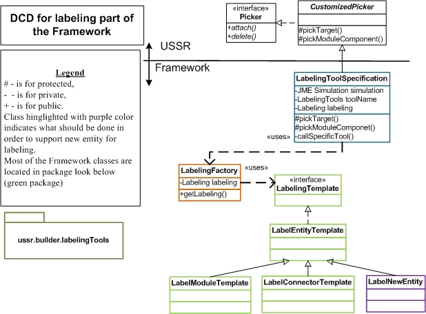

This package supports the labeling of entities. Currently supports labeling of modules and connectors.
It is following TEMPLATE method design pattern. There is also involved Factory pattern for creating
specific objects to handle each entity.
1) How to ...?
1.1) Support labeling of new entity?
Look the design class diagram beneath.
- extend your new class from LabelEntityTemplate.java class and implement the method called "getCurrentEntity()";
- add your new entity into enumeration "LabeledEntities",
- add support for your new entity in array called "labelingMap" in class "LabelingFactory.java".
- Scan the class called "LabelingToolSpecification" for missing implementation, especially
method called "callSpecificTool()".
